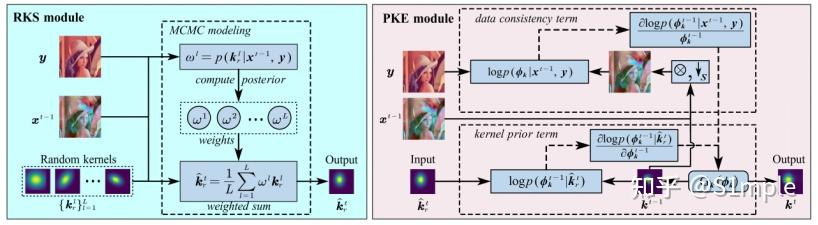

I am now an Associate Professor (mater tutor) at the Department of Electronic Science and Technology, National University of Defense Technology (NUDT), China. Prior to being an academic scholar, I obtained my Ph.D degree at Imperial College London in 2020; finished my Msc.Eng and B.Eng in NUDT, China. My research interest lies in low-level image processing and intelligent signal processing, combining advanced non-convex optimization theory and statistical modeling using learning-aided approaches.
May 2024:Happy to announce that our paper Blind Super-Resolution Via Meta-Learning and Markov Chain Monte Carlo Simulation got accepted to TPAMI!
Mar 2024:Happy to announce that our paper A Dynamic Kernel Prior Model for Unsupervised Blind lmage Super-Resolution got accepted to CVPR!
Sep 2023:Happy to announce that our paper Meta-learning based Domain Prior with Application to Optical-lSAR lmage Translation got accepted to TCSVT!
Sep 2023:Happy to announce that our paper Metalearning-based alternating minimization algorithm for nonconvex optimization got accepted to TNNLS!

A Dynamic Kernel Prior Model for Unsupervised Blind Image Super-Resolution
Zhixiong Yang, Jingyuan Xia, Shengxi Li, Xinghua Huang, Shuanghui Zhang, Zhen Liu, Yaowen Fu, Yongxiang Liu
CVPR, 2024
Paper/
PDF
/Code
Deep learning-based methods have achieved significant successes on solving the blind super-resolution (BSR) problem. However, most of them request supervised pre-training on labelled datasets. This paper proposes an unsupervised kernel estimation model, named dynamic kernel prior (DKP), to realize an unsupervised and pre-training-free learning-based algorithm for solving the BSR problem. DKP can adaptively learn dynamic kernel priors to realize real-time kernel estimation, and thereby enables superior HR image restoration performances. This is achieved by a Markov chain Monte Carlo sampling process on random kernel distributions. The learned kernel prior is then assigned to optimize a blur kernel estimation network, which entails a network-based Langevin dynamic optimization strategy. These two techniques ensure the accuracy of the kernel estimation. DKP can be easily used to replace the kernel estimation models in the existing methods, such as Double-DIP and FKP-DIP, or be added to the off-the-shelf image restoration model, such as diffusion model. In this paper, we incorporate our DKP model with DIP and diffusion model, referring to DIP-DKP and Diff-DKP, for validations. Extensive simulations on Gaussian and motion kernel scenarios demonstrate that the proposed DKP model can significantly improve the kernel estimation with comparable runtime and memory usage, leading to state-of-the-art BSR results.
An Integrated Network for SA-ISAR Image Processing With Adaptive Denoising and Super-Resolution Modules
Chen, Mingyao and Xia, Jing-Yuan and Liu, Tianpeng and Liu, Li
IEEE Geoscience and Remote Sensing Letters, 2024
Paper/
PDF
This letter focuses on developing an effective and generalizable deep learning approach for inverse synthetic aperture radar (ISAR) image super-resolution (SR). Since the ISAR imaging process is typically carried out under sparse aperture (SA) conditions, imaging results may exhibit striped noise caused by echoes missing, making it challenging to apply conventional SR methods directly. In view of this, we present a blind SR (BSR) method specifically designed for ISAR images with striped noise. The proposed method employs an integrated network that includes an adaptive denoising module and a SR module (AD-SRNet). Experimental results on both synthetic and real ISAR samples demonstrate the superior performance and strong generalization capability of our approach.
Blind Super-Resolution Via Meta-Learning and Markov Chain Monte Carlo Simulation
Xia, Jingyuan and Yang, Zhixiong and Li, Shengxi and Zhang, Shuanghui and Fu, Yaowen and Gündüz, Deniz and Li, Xiang
IEEE Transactions on Pattern Analysis and Machine Intelligence, 2024
Paper/
PDF
Learning based approaches have witnessed great successes in blind single image super-resolution (SISR) tasks, however, handcrafted kernel priors and learning based kernel priors are typically required. In this paper, we propose a Meta-learning and Markov Chain Monte Carlo based SISR approach to learn kernel priors from organized randomness. In concrete, a lightweight network is adopted as kernel generator, and is optimized via learning from the MCMC simulation on random Gaussian distributions. This procedure provides an approximation for the rational blur kernel, and introduces a network-level Langevin dynamics into SISR optimization processes, which contributes to preventing bad local optimal solutions for kernel estimation. Meanwhile, a meta-learning based alternating optimization procedure is proposed to optimize the kernel generator and image restorer, respectively. In contrast to the conventional alternating minimization strategy, a meta-learning based framework is applied to learn an adaptive optimization strategy, which is less-greedy and results in better convergence performance. These two procedures are iteratively processed in a plug-and-play fashion, for the first time, realizing a learning-based but plug-and-play blind SISR solution in unsupervised inference. Extensive simulations demonstrate the superior performance and generalization ability of the proposed approach when comparing with state-of-the-arts on synthesis and real-world datasets.
Open Set Recognition and Category Discovery Framework for SAR Target Classification Based on K-Contrast Loss and Deep Clustering
Chen, Mingyao and Xia, Jing-Yuan and Liu, Tianpeng and Liu, Li and Liu, Yongxiang
IEEE Journal of Selected Topics in Applied Earth Observations and Remote Sensing, 2024
Paper/
PDF
Synthetic aperture radar automatic target recognition (SAR ATR) has been widely studied in recent years. Most ATR models are designed based on the traditional closed-set assumption. This type of ATR model can only identify target categories existing in the training set, and it will result in missed detection or misclassification of unseen target categories encountered in battlefield reconnaissance, posing a potential threat. Therefore, it is of great significance to design a model that can simultaneously achieve known class classification and unknown class judgment. In addition, researchers usually use the obtained unknown class data for model relearning to enable it to recognize new categories. However, before this process, it is necessary to manually interpret and annotate the obtained unknown class data, which undoubtedly requires a large time cost and is difficult to meet the timeliness requirements. To solve these problems, we propose a framework that integrates the open-set recognition module and the novel class discovery module. By introducing the K-contrast loss, the open-set recognition module can accurately distinguish unknown class data, classify known class data, and then transfer the known class knowledge through deep clustering for clustering annotation of unknown class data. Extensive experimental results on the MSTAR benchmark dataset demonstrate the effectiveness of the proposed methods.
Localized Incomplete Multiple Kernel k-Means With Matrix-Induced Regularization
Li, Miaomiao and Xia, Jingyuan and Xu, Huiying and Liao, Qing and Zhu, Xinzhong and Liu, Xinwang
IEEE Transactions on Cybernetics, 2023
Paper/
PDF
Localized incomplete multiple kernel k -means (LI-MKKM) is recently put forward to boost the clustering accuracy via optimally utilizing a quantity of prespecified incomplete base kernel matrices. Despite achieving significant achievement in a variety of applications, we find out that LI-MKKM does not sufficiently consider the diversity and the complementary of the base kernels. This could make the imputation of incomplete kernels less effective, and vice versa degrades on the subsequent clustering. To tackle these problems, an improved LI-MKKM, called LI-MKKM with matrix-induced regularization (LI-MKKM-MR), is proposed by incorporating a matrix-induced regularization term to handle the correlation among base kernels. The incorporated regularization term is beneficial to decrease the probability of simultaneously selecting two similar kernels and increase the probability of selecting two kernels with moderate differences. After that, we establish a three-step iterative algorithm to solve the corresponding optimization objective and analyze its convergence. Moreover, we theoretically show that the local kernel alignment is a special case of its global one with normalizing each base kernel matrices. Based on the above observation, the generalization error bound of the proposed algorithm is derived to theoretically justify its effectiveness. Finally, extensive experiments on several public datasets have been conducted to evaluate the clustering performance of the LI-MKKM-MR. As indicated, the experimental results have demonstrated that our algorithm consistently outperforms the state-of-the-art ones, verifying the superior performance of the proposed algorithm.
Meta-learning based Domain Prior with Application to Optical-ISAR Image Translation
Liao, Huaizhang and Xia, Jingyuan and Yang, Zhixiong and Pan, Fulin and Liu, Zhen and Liu, Yongxiang
IEEE Transactions on Circuits and Systems for Video Technology, 2023
Paper/
PDF
This paper focuses on generating Inverse Synthetic Aperture Radar (ISAR) images from optical images, in particular, for orbit space targets. ISAR images are widely applied in space target observation and classification tasks, whereas, limited to the expensive cost of ISAR sample collection, training deep learning-based ISAR image classifiers with insufficient samples and generating ISAR samples from emulation optical images via image translation techniques have attracted increasing attention. Image translation has highlighted significant success and popularity in computer vision, remote sensing and data generation societies. However, most of the existing methods are implemented under the discipline of extracting the explicit pixel-level features and do not perform effectively while entailing translation to domains with specific implicit features, such as ISAR image does. We propose a meta-learning based domain prior to implicit feature modelling and apply it to CycleGAN and UNIT models to realize effective translations between the ISAR and optical domains. Two representative implicit features, ISAR scattering distribution feature from the physical domain and the classification identifying feature from the task domain, are elaborately formulated with explicit modelling in statistic form. A meta-learning based training scheme is introduced to leverage the mutual knowledge of domain priors across different samples, and thus allows few-shot learning capacity with dramatically reduced training samples. Extensive simulations validate that the obtained ISAR images have better visible-authenticity and training-effectiveness than the existing image translation approaches on various synthetic datasets. Source codes are available at.
Metalearning-Based Alternating Minimization Algorithm for Nonconvex Optimization
Xia, Jing-Yuan and Li, Shengxi and Huang, Jun-Jie and Yang, Zhixiong and Jaimoukha, Imad M. and Gündüz, Deniz
IEEE Transactions on Neural Networks and Learning Systems, 2023
Paper/
PDF
In this article, we propose a novel solution for nonconvex problems of multiple variables, especially for those typically solved by an alternating minimization (AM) strategy that splits the original optimization problem into a set of subproblems corresponding to each variable and then iteratively optimizes each subproblem using a fixed updating rule. However, due to the intrinsic nonconvexity of the original optimization problem, the optimization can be trapped into a spurious local minimum even when each subproblem can be optimally solved at each iteration. Meanwhile, learning-based approaches, such as deep unfolding algorithms, have gained popularity for nonconvex optimization; however, they are highly limited by the availability of labeled data and insufficient explainability. To tackle these issues, we propose a meta-learning based alternating minimization (MLAM) method that aims to minimize a part of the global losses over iterations instead of carrying minimization on each subproblem, and it tends to learn an adaptive strategy to replace the handcrafted counterpart resulting in advance on superior performance. The proposed MLAM maintains the original algorithmic principle, providing certain interpretability. We evaluate the proposed method on two representative problems, namely, bilinear inverse problem: matrix completion and nonlinear problem: Gaussian mixture models. The experimental results validate the proposed approach outperforms AM-based methods.
SM-CNN: Separability Measure-Based CNN for SAR Target Recognition
Zhang, Yifan and Xia, Jingyuan and Gao, Xunzhang and Xue, Lingyan and Zhang, Xinyu and Li, Xiang
IEEE Geoscience and Remote Sensing Letters, 2023
Paper/
PDF
With the maturity of deep learning algorithm in synthetic aperture radar (SAR) target recognition field, convolutional neural network (CNN) has become the most effective model. However, the interpretability and the separability of feature maps extracted from convolution layers have not been specially analyzed neither qualitatively nor quantitatively, which makes the traditional model work like a “black box.” To alleviate the problem, a novel model based on separability measure (SM)-CNN is proposed in this letter, which introduces the principle of maximal coding rate reduction (MCR $^2$ ) to the backbone module. SM-CNN quantitatively analyzes the separability of the feature maps and takes the value as a vital part of the loss function to guide the training process of the model. The calculation process of the SM values can be strictly derived mathematically, so it is more interpretable, turning the black box into a “gray box.” In addition, the proposed model can achieve comparable recognition performance of the backbone networks with reduced computational complexity. Comparative experiments based on moving and stationary target acquisition and recognition (MSTAR) and OpenSARShip datasets verify the effectiveness and practicability of the method proposed in this letter.
A Learning-Aided Flexible Gradient Descent Approach to MISO Beamforming
Yang, Zhixiong and Xia, Jing-Yuan and Luo, Junshan and Zhang, Shuanghui and Gündüz, Deniz
IEEE Wireless Communications Letters, 2022
Paper/
PDF
This letter proposes a learning aided gradient descent (LAGD) algorithm to solve the weighted sum rate (WSR) maximization problem for multiple-input single-output (MISO) beamforming. The proposed LAGD algorithm directly optimizes the transmit precoder through implicit gradient descent based iterations, at each of which the optimization strategy is determined by a neural network, and thus, is dynamic and adaptive. At each instance of the problem, this network is initialized randomly, and updated throughout the iterative solution process. Therefore, the LAGD algorithm can be implemented at any signal-to-noise ratio (SNR) and for arbitrary antenna/user numbers, does not require labelled data or training prior to deployment. Numerical results show that the LAGD algorithm can outperform of the well-known WMMSE algorithm as well as other learning-based solutions with a modest computational complexity. Our code is available at https://github.com/XiaGroup/LAGD.
Speckle-Variant Attack: Toward Transferable Adversarial Attack to SAR Target Recognition
Peng, Bowen and Peng, Bo and Zhou, Jie and Xia, Jingyuan and Liu, Li
IEEE Geoscience and Remote Sensing Letters, 2022
Paper/
PDF
Recent advances in deep neural networks (DNNs) highlight the success of synthetic aperture radar automatic target recognition (SAR ATR) with superior effectiveness and efficiency. However, the DNNs are known to be vulnerable to adversarial examples, whose performance will be dramatically reduced when the imperceptible perturbation exists. In optical image processing, invisible perturbations are typically embedded in the way of a full-scale distribution in a purely digital setting. Whereas, it is not feasible to achieve this in SAR ATR tasks due to the inaccessibility of the SAR system and unique imaging mechanism. In practice, the subtle perturbations could be produced by physical approaches that change the scattering property of the target. Therefore, the adversarial perturbations for SAR ATR should be of good transferability to achieve an effective attack on major DNN classifiers as well as the accessible additive region in SAR images with respect to the realistic target locations. In this letter, we present a novel approach, namely speckle-variant attack (SVA). The proposed SVA is composed of two major modules: an iterative gradient-based perturbation generator and a target region extractor. The perturbation generator implements a speckle-variant transformation that continuously reconstructs the speckle-noise pattern during each of the iterations for strong transferability. The target region extractor ensures the feasibility of the additive adversarial perturbations in practical scenarios by restricting the region of the perturbation. Therefore, the proposed SVA is capable of producing adversarial examples that are more transferable and physically feasible. Extensive evaluations of the MSTAR dataset show that the SVA has achieved superior transferability and competitive time consumption compared with the SOTA transformation-based techniques, including the diverse inputs method and the scale-invariant method.
Efficient and Effective Regularized Incomplete Multi-View Clustering
Liu, Xinwang and Li, Miaomiao and Tang, Chang and Xia, Jingyuan and Xiong, Jian and Liu, Li and Kloft, Marius and Zhu, En
IEEE Transactions on Pattern Analysis and Machine Intelligence, 2021
Paper/
PDF
Incomplete multi-view clustering (IMVC) optimally combines multiple pre-specified incomplete views to improve clustering performance. Among various excellent solutions, the recently proposed multiple kernel k-means with incomplete kernels (MKKM-IK) forms a benchmark, which redefines IMVC as a joint optimization problem where the clustering and kernel matrix imputation tasks are alternately performed until convergence. Though demonstrating promising performance in various applications, we observe that the manner of kernel matrix imputation in MKKM-IK would incur intensive computational and storage complexities, over-complicated optimization and limitedly improved clustering performance. In this paper, we first propose an Efficient and Effective Incomplete Multi-view Clustering (EE-IMVC) algorithm to address these issues. Instead of completing the incomplete kernel matrices, EE-IMVC proposes to impute each incomplete base matrix generated by incomplete views with a learned consensus clustering matrix. Moreover, we further improve this algorithm by incorporating prior knowledge to regularize the learned consensus clustering matrix. Two three-step iterative algorithms are carefully developed to solve the resultant optimization problems with linear computational complexity, and their convergence is theoretically proven. After that, we theoretically study the generalization bound of the proposed algorithms. Furthermore, we conduct comprehensive experiments to study the proposed algorithms in terms of clustering accuracy, evolution of the learned consensus clustering matrix and the convergence. As indicated, our algorithms deliver their effectiveness by significantly and consistently outperforming some state-of-the-art ones.
Feature Selective Projection with Low-Rank Embedding and Dual Laplacian Regularization
Tang, Chang and Liu, Xinwang and Zhu, Xinzhong and Xiong, Jian and Li, Miaomiao and Xia, Jingyuan and Wang, Xiangke and Wang, Lizhe
IEEE Transactions on Knowledge and Data Engineering, 2020
Paper/
PDF
Feature extraction and feature selection have been regarded as two independent dimensionality reduction methods in most of the existing literature. In this paper, we propose to integrate both approaches into a unified framework and design an unsupervised linear feature selective projection (FSP) for feature extraction with low-rank embedding and dual Laplacian regularization, with the aim to exploit the intrinsic relationship among data and suppress the impact of noise. Specifically, a projection matrix with an l2,1-norm regularization is introduced to project original high dimensional data points into a new subspace with lower dimension, where the l2,1-norm regularization can endow the projection with good interpretability. We deploy a coefficient matrix with low rank constraint to reconstruct the data points and the l2,1-norm is imposed to regularize the data reconstruction errors in the low-dimensional subspace and make FSP robust to noise. Furthermore, a dual graph Laplacian regularization term is imposed on the low dimensional data and data reconstruction matrix for preserving the local manifold geometrical structure of data. Finally, an alternatively iterative algorithm is carefully designed for solving the proposed optimization model. Theoretical convergence and computational complexity analysis of the algorithm are also provided. Comprehensive experiments on various benchmark datasets have been carried out to evaluate the performance of the proposed FSP. As indicated, our algorithm significantly outperforms other state-of-the-art methods for feature extraction.
Subspace segmentation-based robust multiple kernel clustering
Sihang Zhou and En Zhu and Xinwang Liu and Tianming Zheng and Qiang Liu and Jingyuan Xia and Jianping Yin
Information Fusion, 2020
Paper/
PDF
Multiple kernel clustering (MKC) is an important research topic during the last few decades. It optimally combines a group of pre-specified base kernels to improve clustering performance. Though demonstrating promising performance in various applications, this task is still challenging due to lack of reliable discriminative guidance for the base kernel combination. Moreover, noise from either corrupted data or inappropriately selected base kernel parameters would undermine the intrinsic manifold and makes the problem even harder. In this paper, we integrate subspace segmentation into MKC and propose a robust subspace segmentation-based multiple kernel clustering (SS-MKC) algorithm to address these issues. In our formulation, we unify the constrained kernel polarization and subspace segmentation into a single procedure, where the resultant affinity matrix embedded with robust subspace structural information is utilized to guide the linear combination of base kernels. In addition, we carefully design the noise representation matrix as well as two sparse constraints, i.e., the ℓ1-norm and the probability constraints, to eliminate the adverse effect of noise among base kernels. We then propose a novel Alternative Direction Method of Multiplier (ADMM)-based algorithm to solve the resulting optimization problem. Extensive experiments have been conducted on both synthetic and public benchmark datasets, and the results well demonstrate the superiority of the proposed algorithm when compared with the state-of-the-art MKC methods.
Thank Dr. Jon Barron for sharing the source code of the website.
{kind=link}